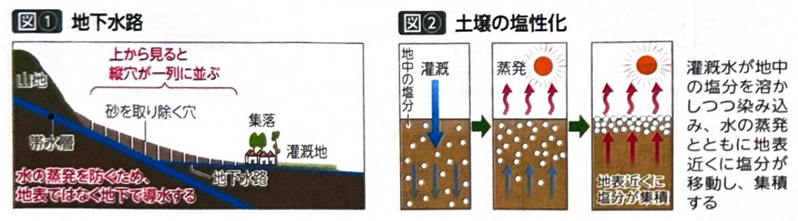
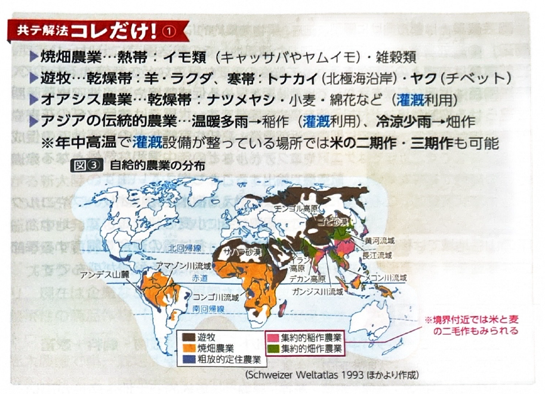
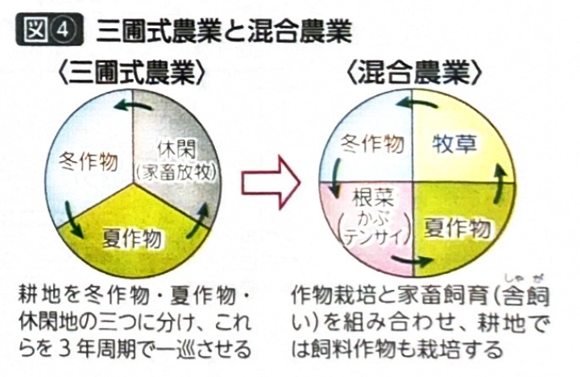
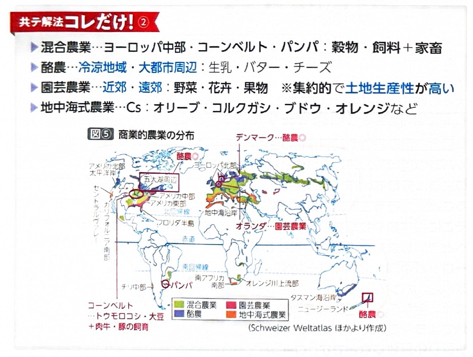
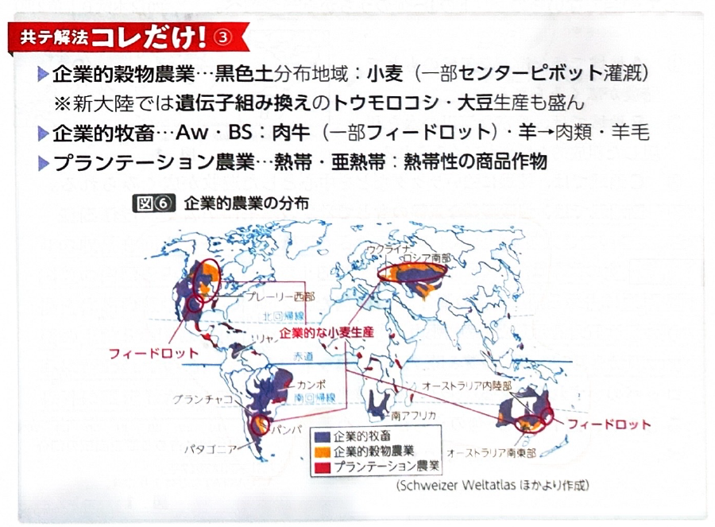

第3章 農林水産業 - 農業の類型
ポイント総復習
1. 農業の類型（ホイットルセイの分類）
世界の農業は、その目的や気候、経営規模などによって「自給的農業」「商業的農業」「企業的農業」などに分類されます（ホイットルセイの農業区分）。入試では各農業の「分布と主作物」がよく問われます。
2. 自給的農業
主に自家消費（自分たちで食べるため）を目的とする農業です。アジアやアフリカの発展途上国などで多くみられます。
- 焼畑農業：主に熱帯でみられます。林野を焼き、その草木灰を肥料としてキャッサバ（タピオカの原料）などのイモ類や雑穀を栽培します。近年は人口増加などで移動周期が短くなり、環境負荷（森林破壊）が問題化しています。
- 遊牧：農耕が困難な乾燥地域や寒冷地域でみられます。自然の草や水を求めて移動しながら家畜を飼育し、肉や乳を利用します。テント（モンゴルのゲルなど）での生活が中心です。
- 飼育される主な家畜：羊、ヤギ、馬（モンゴル）、ラクダ（北アフリカ等）、トナカイ（北極圏）、リャマ・アルパカ（アンデス高地）など。
- オアシス農業：乾燥地域で、外来河川や湧水、地下水路などを利用して灌漑（かんがい）を行い、小麦やナツメヤシなどを栽培します。


3. 商業的農業
農作物を市場で販売して利益を得ることを主な目的とする農業です。ヨーロッパなどで発達しました。
- 混合農業：家畜（豚や牛）の飼育と、穀物（小麦など）や飼料作物（家畜のエサ）の栽培を組み合わせた農業です。アメリカのコーンベルト（トウモロコシ地帯）などが有名です。
- 酪農：冷涼な気候ややせ地で、牧草などを栽培して乳牛を飼育し、バターやチーズなどの乳製品を生産します。消費地である大都市の近くや、加工・輸送技術の発達した地域で行われます。
- 園芸農業：大都市の近郊で、野菜や花卉（花）、果物などを栽培します。鮮度が重要であるため都市の近くで行われ、集約的で土地生産性が高いのが特徴です。
- 地中海式農業：Cs（地中海性気候）の地域で行われます。夏に乾燥する気候を利用して、オリーブ、ブドウ、オレンジ、コルクガシなどの樹木作物を栽培します。
- 三圃式農業：中世ヨーロッパで普及した、耕地を「冬作物」「夏作物」「休閑地」の3つに分け、1年ごとにローテーション（輪作）する農法です。休閑地を家畜の放牧場として利用し、地力の回復と生産性向上を図ることで、人口増加や社会の発展を支えました。


4. 企業的農業
新大陸などでみられる、巨大な資本を投下して行われる大規模な農業です。
- 企業的穀物農業：広大な農場で大型機械を使い、粗放的で大規模な穀物生産（主に小麦）を行います。アメリカのプレーリーやロシア南部など、肥沃な黒色土の分布地域で盛んです。
- アグリビジネスと穀物メジャー：農産物の生産から流通、販売までを総合的に扱う産業をアグリビジネスといい、これらを牛耳る欧米の多国籍商社を穀物メジャーとよびます。
- 遺伝子組み換え作物：アメリカやブラジルなどでは、除草剤や病虫害への耐性を持たせた遺伝子組み換えのトウモロコシや大豆の生産が急増しています。

基礎問題（理解度チェック）
Q1. 自給的農業について、空欄を埋めなさい。
熱帯でみられる、林野を焼いて得た
を肥料として利用する農業を
という。また、乾燥・寒冷地域で水や草を求めて移動しながら家畜を飼育する
では、モンゴルの馬やアンデス高地の
などが飼育される。
Q2. 商業的農業の類型について、空欄を埋めなさい。
家畜の飼育と穀物・飼料作物の栽培を組み合わせた農業を
といい、アメリカの
などで盛んである。また、冷涼な気候や大消費地向けに行われる、乳牛を飼育し乳製品を生産する農業を
という。
Q3. 地中海式農業は、夏に乾燥する気候（Cs）を利用して、オリーブやブドウ、オレンジなどの樹木作物を栽培する商業的農業である。
Q4. 企業的農業について、空欄を埋めなさい。
新大陸やロシアなどでみられる、大型機械を用いて粗放的かつ大規模に小麦などを生産する農業を
という。アメリカやブラジルなどでは、巨大な多国籍商社である
が関与し、除草剤や病虫害等に耐性を持たせた
の生産も盛んである。
Q5. 園芸農業は、大都市から遠く離れた広大な土地を用いて粗放的に野菜や花卉などを栽培する農業であり、土地生産性が低いのが特徴である。